Lesson 14: Purposeful model selection
2026-03-02
Learning Objectives
Understand the overall steps for purposeful selection as a model building strategy
Apply purposeful selection to a dataset using R
Use different approaches to assess the linear scale of continuous variables in linear regression
Regression analysis process


Model Selection
Building a model
Selecting variables
Prediction vs interpretation
Comparing potential models
Model Fitting
Find best fit line
Using OLS in this class
Parameter estimation
Categorical covariates
Interactions
Model Evaluation
- Evaluation of model fit
- Testing model assumptions
- Residuals
- Transformations
- Influential points
- Multicollinearity
Model Use (Inference)
- Inference for coefficients
- Hypothesis testing for coefficients
- Inference for expected \(Y\) given \(X\)
- Prediction of new \(Y\) given \(X\)
Learning Objectives
- Understand the overall steps for purposeful selection as a model building strategy
Apply purposeful selection to a dataset using R
Use different approaches to assess the linear scale of continuous variables in linear regression
“Successful modeling of a complex data set is part science, part statistical methods, and part experience and common sense.”
Hosmer, Lemeshow, and Sturdivant Textbook, pg. 101
Overall Process
Exploratory data analysis
Check unadjusted associations in simple linear regression
Enter all covariates in model that meet some threshold
- One textbook suggest \(p<0.2\) or \(p<0.25\): great for modest sized datasets
- PLEASE keep in mind sample size in your study
- Can also use magnitude of association rather than, or along with, p-value
Remove those that no longer reach some threshold
- Compare magnitude of associations to unadjusted version (univariable)
Check scaling of continuous and coding of categorical covariates
Check for interactions
Assess model fit
- Model assumptions, diagnostics, overall fit
Process with snappier step names
Pre-step:
Step 1:
Step 2:
Step 3:
Step 4:
Step 5:
Step 6:
Exploratory data analysis (EDA)
Simple linear regressions / analysis
Preliminary variable selection
Assess change in coefficients
Assess scale for continuous variables
Check for interactions
Assess model fit
Learning Objectives
- Understand the overall steps for purposeful selection as a model building strategy
- Apply purposeful selection to a dataset using R
- Use different approaches to assess the linear scale of continuous variables in linear regression
Pre-step: Exploratory data analysis
- The following slides are all reference until we get to Step 1
- We have covered exploratory data analysis in other classes and have completed it in our previous labs
Pre-step: Exploratory data analysis
Things we have been doing over the quarter in class and in our project
I will not discuss some of the methods mentioned in our lab and data management class
- I am only going to introduce additional exploratory functions
A few things we can do:
- Check the data
- Study your variables
- Missing data?
- Explore simple relationships and assumptions
Pre-step: Exploratory data analysis: Check the data
Get to know the potential values for the data
Categories
Units
Make yourself a codebook for reference
Then make sure the summary of values makes sense
- If minimum or maximum look outside appropriate range
- For example: a negative value for a measurement that is inherently positive (like population or income)

Pre-step: Exploratory data analysis: Check the data
Pre-step: Exploratory data analysis: Check the data
Look at a summary for the raw data
Typical use:
Note that
skim(gapm)looks different because I had to create factorsI am breaking down the
skim()function into the categorical and continuous variables only because I want to show them on the slides
Pre-step: Exploratory data analysis: Check the data
Variable type: numeric
| skim_variable | n_missing | complete_rate | mean | sd | p0 | p25 | p50 | p75 | p100 | hist |
|---|---|---|---|---|---|---|---|---|---|---|
| cell_phones_100 | 0 | 1 | 116.52 | 34.56 | 32.06 | 99.13 | 116.68 | 137.18 | 207.28 | ▂▃▇▃▁ |
| life_exp | 0 | 1 | 70.97 | 6.76 | 50.69 | 66.11 | 71.52 | 75.67 | 85.23 | ▁▃▆▇▂ |
| vax_rate | 0 | 1 | 91.45 | 8.78 | 63.00 | 89.00 | 95.00 | 98.00 | 99.00 | ▁▁▁▂▇ |
| basic_sani | 0 | 1 | 79.76 | 23.75 | 21.64 | 61.11 | 92.80 | 97.99 | 100.00 | ▁▂▁▂▇ |
| co2_emissions | 0 | 1 | 5356.04 | 12822.92 | 17.67 | 285.50 | 871.27 | 4881.84 | 102490.55 | ▇▁▁▁▁ |
| happiness_score | 0 | 1 | 52.35 | 11.65 | 12.81 | 43.59 | 53.78 | 60.44 | 77.29 | ▁▂▆▇▂ |
Poll Everywhere Question 1

Pre-step: Exploratory data analysis: Study your variables
Started this a little bit in previous slide (
skim()), but you may want to look at things like:- Sample size
- Counts of missing data
- Means and standard deviations
- IQRs
- Medians
- Minimums and maximums
Can also look at visuals
- Continuous variables: histograms (in `skimr() a little)
- Categorical variables: frequency plots
Pre-step: Exploratory data analysis: Study your variables
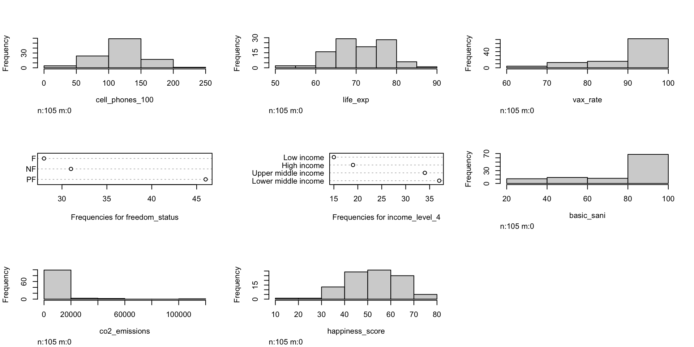
Poll Everywhere Question 2
Pre-step: Exploratory data analysis: Missing data
- Why are there missing data?
- Which variables and observations should be excluded because of missing data?
- Will I impute missing data?
- Unfortunately, we don’t have time to discuss missing data more thoroughly
- I will try to cover this topic more thoroughly in BSTA 513
- For the Gapminder dataset, we chose to use complete cases
Pre-step / Step 1 : Explore simple relationships and assumptions
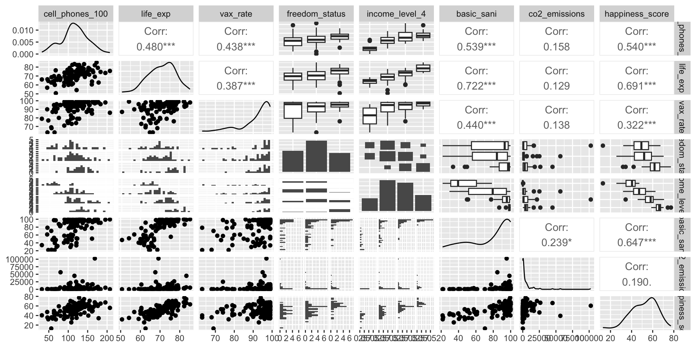
Step 1: Simple linear regressions / analysis
For each covariate, we want to see how it relates to the outcome (without adjusting for other covariates)
We can partially do this with visualizations
Helps us see the data we throw it into regression that makes assumptions (like our LINE assumptions)
ggpairs()can be a quick way to do itggplot()can make each plot+ geom_boxplot()to make boxplots by groups for categorical covariates+ geom_jitter() + stat_summary()to make non-overlaping points with group means for categorical covariates+ geom_point()to make scatterplots for continuous covariates
We need to run simple linear regression
- We’re calling regression with multi-level categories “simple” even though there are multiple coefficients
Step 1: Simple linear regressions / analysis
Let’s think back to our Gapminder dataset
Always good to start with our main relationship: life expectancy vs. cell phones
- Throwback to Lesson 3 SLR when we first visualized and ran
lm()for this relationship
- Throwback to Lesson 3 SLR when we first visualized and ran
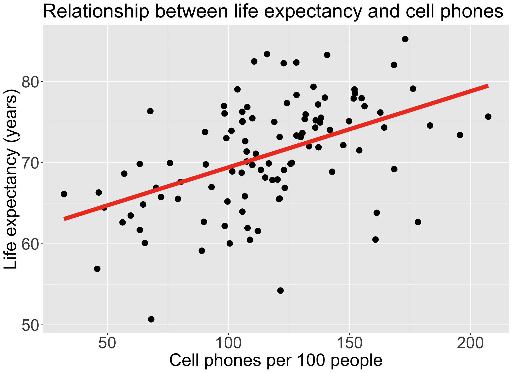
| term | estimate | std.error | statistic | p.value |
|---|---|---|---|---|
| (Intercept) | 60.04 | 2.06 | 29.21 | 0.00 |
| cell_phones_100 | 0.09 | 0.02 | 5.55 | 0.00 |
Poll Everywhere Question 3
Step 1: Simple linear regressions / analysis
- Let’s do this with one other variable before I show you a streamlined version of SLR
Code
ggplot(gapm, aes(x = freedom_status, y = life_exp)) +
geom_jitter(size = 1, alpha = .6, width = 0.2) +
stat_summary(fun = mean, geom = "point", size = 8, shape = 18) +
labs(x = "Freedom status",
y = "Country life expectancy (years)",
title = "Life expectancy vs. Freedom status",
caption = "Diamonds = FS averages") +
theme(axis.title = element_text(size = 20),
axis.text = element_text(size = 20),
title = element_text(size = 20))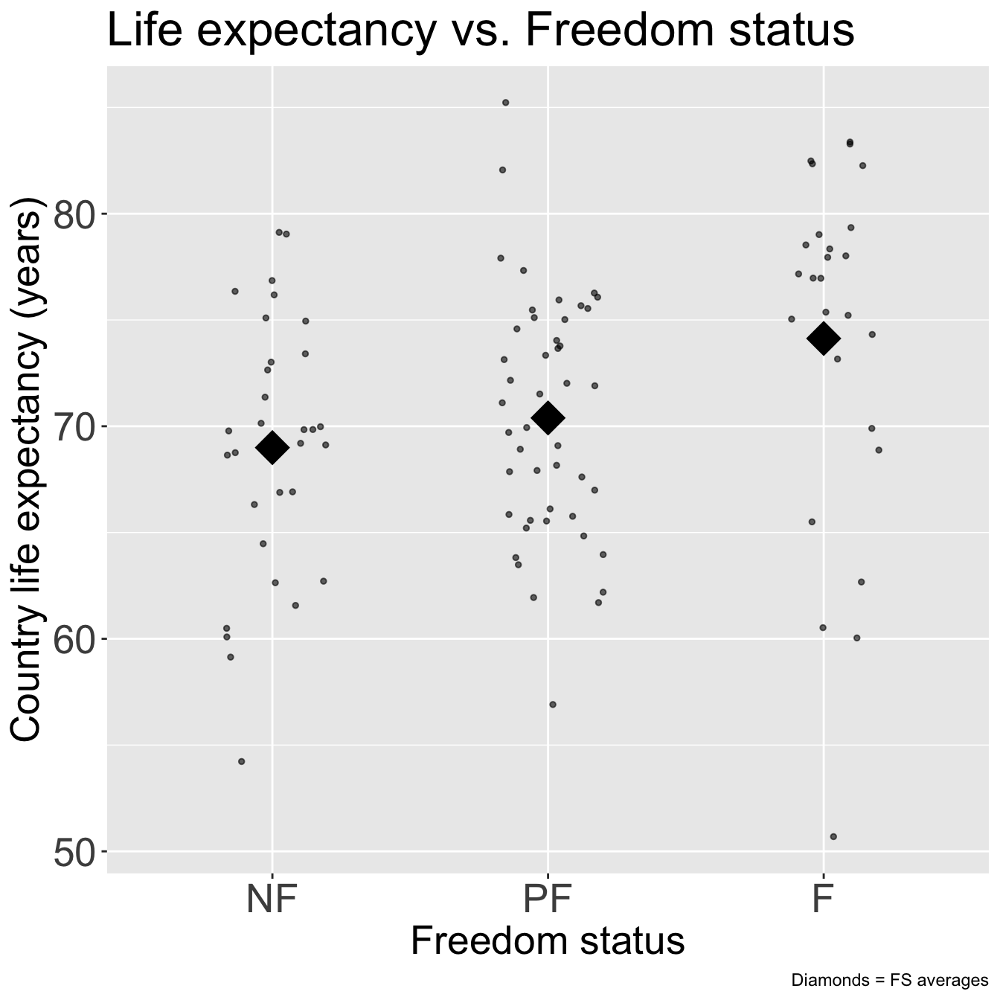
| term | df | sumsq | meansq | statistic | p.value |
|---|---|---|---|---|---|
| freedom_status | 2.00 | 415.94 | 207.97 | 4.89 | 0.01 |
| Residuals | 102.00 | 4,341.91 | 42.57 | NA | NA |
Recall from Lesson 5 (and Lesson 10):
anova()with one model name will compare the model (model_FS) to the intercept model
Step 1: Simple linear regressions / analysis
- If we do a good job visualizing the relationship between our outcome and each covariate, then we can proceed to a streamlined version of the F-test for each relationship
- Run
add1()to add each variable one at a time and separately - Output will include hypothesis test (using F-test) if coefficient(s) is 0 or not
- Null: intercept model
- Alternative: model with single variable
Step 1: Simple linear regressions / analysis
- Output from
add1()
Single term additions
Model:
life_exp ~ 1
Df Sum of Sq RSS AIC F value Pr(>F)
<none> 4757.8 402.43
cell_phones_100 1 1094.10 3663.7 376.99 30.7588 2.271e-07 ***
freedom_status 2 415.94 4341.9 396.82 4.8856 0.009414 **
income_level_4 3 2285.53 2472.3 339.69 31.1230 2.484e-14 ***
basic_sani 1 2478.07 2279.8 327.18 111.9586 < 2.2e-16 ***
vax_rate 1 711.18 4046.7 387.43 18.1016 4.624e-05 ***
co2_emissions 1 79.27 4678.6 402.66 1.7451 0.189420
happiness_score 1 2269.61 2488.2 336.36 93.9503 3.569e-16 ***
---
Signif. codes: 0 '***' 0.001 '**' 0.01 '*' 0.05 '.' 0.1 ' ' 1Step 2: Preliminary variable selection
Identify candidates for your first multivariable model by performing an F-test on each covariate’s SLR
- Using p-values from previous slide
- If the p-value of the test is less than 0.25, then consider the variable a candidate
Candidates for first multivariable model
- All clinically important variables (regardless of p-value)
- Variables with univariate test with p-value < 0.25
- With more experience, you won’t need to rely on these strict rules as much
Step 2: Preliminary variable selection
From the previous p-values from the F-test on each covariate’s SLR
- Decision: we keep all the covariates since they all have a p-value < 0.25
Single term additions
Model:
life_exp ~ 1
Df Sum of Sq RSS AIC F value Pr(>F)
<none> 4757.8 402.43
cell_phones_100 1 1094.10 3663.7 376.99 30.7588 2.271e-07 ***
freedom_status 2 415.94 4341.9 396.82 4.8856 0.009414 **
income_level_4 3 2285.53 2472.3 339.69 31.1230 2.484e-14 ***
basic_sani 1 2478.07 2279.8 327.18 111.9586 < 2.2e-16 ***
vax_rate 1 711.18 4046.7 387.43 18.1016 4.624e-05 ***
co2_emissions 1 79.27 4678.6 402.66 1.7451 0.189420
happiness_score 1 2269.61 2488.2 336.36 93.9503 3.569e-16 ***
---
Signif. codes: 0 '***' 0.001 '**' 0.01 '*' 0.05 '.' 0.1 ' ' 1Step 2: Preliminary variable selection
- Fit an initial model including any independent variable with p-value < 0.25 and clinically important variables
init_model = gapm2 %>%
lm(formula =
life_exp ~ cell_phones_100 +
freedom_status +
income_level_4 +
basic_sani +
vax_rate +
co2_emissions +
happiness_score)
tbl_regression(
init_model,
label = list(
cell_phones_100 ~ "Cell phones per 100 people",
freedom_status ~ "Freedom status",
income_level_4 ~ "Income level",
basic_sani ~ "Basic sanitation (%)",
vax_rate ~ "Vaccination rate (%)",
co2_emissions ~ "CO2 emissions",
happiness_score ~ "Happiness score"
)) %>%
as_gt() %>% tab_options(table.font.size = 26) | Characteristic | Beta | 95% CI | p-value |
|---|---|---|---|
| Cell phones per 100 people | 0.00 | -0.03, 0.04 | 0.8 |
| Freedom status | |||
| NF | — | — | |
| PF | 0.88 | -1.1, 2.8 | 0.4 |
| F | -0.61 | -3.2, 2.0 | 0.6 |
| Income level | |||
| Low income | — | — | |
| Lower middle income | -1.3 | -4.6, 2.0 | 0.4 |
| Upper middle income | -0.76 | -5.1, 3.6 | 0.7 |
| High income | 3.7 | -1.8, 9.1 | 0.2 |
| Basic sanitation (%) | 0.14 | 0.08, 0.19 | <0.001 |
| Vaccination rate (%) | 0.04 | -0.07, 0.15 | 0.5 |
| CO2 emissions | 0.00 | 0.00, 0.00 | 0.3 |
| Happiness score | 0.15 | 0.04, 0.26 | 0.011 |
| Abbreviation: CI = Confidence Interval | |||
Step 3: Assess change in coefficient
- We have our initial model with all the covariates that we want to consider
- We want to see if we can remove any of the covariates without changing the coefficient of our main explanatory variable (cell phones) by more than 10%
One variable at a time, we run the multivariable model with and without a variable
- We look at the p-value of the F-test for the coefficients of said variable
- We look at the percent change for the coefficient (\(\Delta\%\)) of our explanatory variable (CP in our example)
General rule: We can remove a variable if…
- p-value > 0.05 for the F-test of its own coefficients
- AND change in coefficient (\(\Delta\%\)) of our explanatory variable is < 10%
Step 3: F-test on dropping each covariate
- Function
drop1(): If we put in our initial model, the function will remove each covariate and perform the respective F-test to test if the coefficients are 0 (null) or not (alternative).
Single term deletions
Model:
life_exp ~ cell_phones_100 + freedom_status + income_level_4 +
basic_sani + vax_rate + co2_emissions + happiness_score
Df Sum of Sq RSS AIC F value Pr(>F)
<none> 1604.5 308.29
cell_phones_100 1 1.06 1605.5 306.36 0.0618 0.804149
freedom_status 2 32.94 1637.4 306.43 0.9650 0.384708
income_level_4 3 220.87 1825.3 315.83 4.3134 0.006769 **
basic_sani 1 441.50 2046.0 331.81 25.8660 1.864e-06 ***
vax_rate 1 9.30 1613.8 306.90 0.5451 0.462149
co2_emissions 1 15.46 1619.9 307.30 0.9057 0.343700
happiness_score 1 115.99 1720.5 313.62 6.7952 0.010629 *
---
Signif. codes: 0 '***' 0.001 '**' 0.01 '*' 0.05 '.' 0.1 ' ' 1Step 3: F-test on dropping each covariate
Let’s consider an example of a hypothesis test from drop1() for income_level_4
Null \(H_0\)
\(\beta_8= \beta_9 = \beta_{10}=0\)
Alternative \(H_1\)
\(\beta_8\neq0\) and/or \(\beta_9\neq0\) and/or \(\beta_{10}\neq0\)
Null / Smaller / Reduced model
\[\begin{aligned} LE = & \beta_0 + \beta_1 \text{CP} + \beta_2 I(\text{FS} = \text{PF}) + \\ & \beta_3 I(\text{FS} = \text{F}) + \beta_4 \text{BS} + \beta_5 \text{VR} + \\ & \beta_6 \text{CO2} + \beta_7 \text{HS} + \epsilon \end{aligned}\]
Alternative / Larger / Full model
\[\begin{aligned} LE = & \beta_0 + \beta_1 \text{CP} + \beta_2 I(\text{FS} = \text{PF}) + \\ & \beta_3 I(\text{FS} = \text{F}) + \beta_4 \text{BS} + \beta_5 \text{VR} + \\ & \beta_6 \text{CO2} + \beta_7 \text{HS} + \beta_8 I(\text{IL} = \text{lower middle}) + \\ & \beta_9 I(\text{IL} = \text{upper middle}) + \beta_{10} I(\text{IL} = \text{upper}) + \epsilon \end{aligned}\]
- From the output of
drop1(), we can see that the p-value for droppingincome_level_4is 0.006, which is < 0.05, so there is sufficient evidence that the coefficients are not 0
Step 3: Testing for percent change ( \(\Delta\%\)) in a coefficient
Our F-test in
drop1()concluded that we should drop a variable (e.g. freedom status)- We then need to check if the change in coefficient for the main variable is less than 10% or not
Generic form: If we are only considering \(X_1\) and \(X_2\), then we need to run the following two models:
Fitted model 1 / reduced model (
mod1): \(\widehat{Y} = \widehat\beta_0 + \widehat\beta_1X_1\)- We call the above \(\widehat\beta_1\) the reduced model coefficient: \(\widehat\beta_{1, \text{mod1}}\) or \(\widehat\beta_{1, \text{red}}\)
Fitted model 2 / Full model (
mod2): \(\widehat{Y} = \widehat\beta_0 + \widehat\beta_1X_1 +\widehat\beta_2X_2\)- We call this \(\widehat\beta_1\) the full model coefficient: \(\widehat\beta_{1, \text{mod2}}\) or \(\widehat\beta_{1, \text{full}}\)
Calculation for % change in coefficient
\[ \Delta\% = 100\% \cdot\frac{\lvert \widehat\beta_{1, \text{mod1}} - \widehat\beta_{1, \text{mod2}} \rvert }{\widehat\beta_{1, \text{mod2}}} = 100\% \cdot \frac{\lvert \widehat\beta_{1, \text{red}} - \widehat\beta_{1, \text{full}} \rvert }{\widehat\beta_{1, \text{full}}} \]
Step 3: Assess change in coefficient
- Let’s try this out on freedom status
Display the ANOVA table with F-statistic and p-value
| term | df.residual | rss | df | sumsq | statistic | p.value |
|---|---|---|---|---|---|---|
| life_exp ~ cell_phones_100 + freedom_status + income_level_4 + basic_sani + vax_rate + co2_emissions + happiness_score | 94.000 | 1,604.465 | NA | NA | NA | NA |
| life_exp ~ cell_phones_100 + basic_sani + vax_rate + co2_emissions + happiness_score + income_level_4 | 96.000 | 1,637.409 | −2.000 | −32.944 | 0.965 | 0.385 |
- \(\widehat\beta_{CP, full} = 0.004\), \(\widehat\beta_{CP, red} = 0.0057\)
\[ \Delta\% = 100\% \cdot \frac{\lvert \widehat\beta_{CP, full} - \widehat\beta_{CP, red} \rvert}{\widehat\beta_{CP, full}} = 100\% \cdot \frac{\lvert 0.004 - 0.0057\rvert}{0.004} = 41.97\% \]
- Based off the percent change, I would keep this in the model
Step 3: Assess change in coefficient (Reference only)
- Let’s try this out on vaccination rate
Display the ANOVA table with F-statistic and p-value
| term | df.residual | rss | df | sumsq | statistic | p.value |
|---|---|---|---|---|---|---|
| life_exp ~ cell_phones_100 + freedom_status + income_level_4 + basic_sani + vax_rate + co2_emissions + happiness_score | 94.000 | 1,604.465 | NA | NA | NA | NA |
| life_exp ~ cell_phones_100 + freedom_status + income_level_4 + basic_sani + co2_emissions + happiness_score | 95.000 | 1,613.770 | −1.000 | −9.305 | 0.545 | 0.462 |
- \(\widehat\beta_{CP, full} = 0.004\), \(\widehat\beta_{CP, red} = 0.006\)
\[ \Delta\% = 100\% \cdot \frac{\lvert \widehat\beta_{CP, full} - \widehat\beta_{CP, red} \rvert}{\widehat\beta_{CP, full}} = 100\% \cdot \frac{\lvert 0.004 - 0.006\rvert}{0.004} = 49.72\% \]
- Based off the percent change, I would keep this in the model
Step 3: Assess change in coefficient (Reference only)
- Let’s try this out on CO2 emissions
Display the ANOVA table with F-statistic and p-value
| term | df.residual | rss | df | sumsq | statistic | p.value |
|---|---|---|---|---|---|---|
| life_exp ~ cell_phones_100 + freedom_status + income_level_4 + basic_sani + vax_rate + co2_emissions + happiness_score | 94.000 | 1,604.465 | NA | NA | NA | NA |
| life_exp ~ cell_phones_100 + freedom_status + income_level_4 + basic_sani + vax_rate + happiness_score | 95.000 | 1,619.924 | −1.000 | −15.459 | 0.906 | 0.344 |
- \(\widehat\beta_{CP, full} = 0.004\), \(\widehat\beta_{CP, red} = 0.0039\)
\[ \Delta\% = 100\% \cdot \frac{\lvert \widehat\beta_{CP, full} - \widehat\beta_{CP, red} \rvert}{\widehat\beta_{CP, full}} = 100\% \cdot \frac{\lvert 0.004 - 0.0039\rvert}{0.004} = 3.35\% \]
- Based off the percent change, I would remove CO2 emissions from the model
Poll Everywhere Question 4
Step 3: Assess change in coefficient: Summary
At the end of this step, we have a preliminary main effects model
Where the variables are excluded that met the following criteria:
- P-value > 0.05 for the F-test of its own coefficients
- Change in coefficient (\(\Delta\%\)) of our explanatory variable is < 10%
In our example, the preliminary main effects model (end of Step 3) has one less variable than the initial model (end of Step 2)
Preliminary main effects model includes:
cell_phones_100freedom_statusincome_level_4basic_sanivax_ratehappiness_score
Recap of Steps 1-3
Pre-step: Exploratory data analysis
Step 1: Simple linear regressions / analysis
Look at each covariate with outcome
Perform SLR for each covariate
Step 2: Preliminary variable selection
From SLR, decide which variables go into the initial model
Use F-test to see if each covariate (on its own) explains enough variation in outcome
End with initial model
Step 3: Assess change in coefficients
From the initial model at end of step 2, we take a variable out of the model if:
P-value > 0.05 for the F-test of its own coefficients
Change in coefficient (\(\Delta\%\)) of our explanatory variable is < 10%
End with preliminary main effects model
Learning Objectives
Understand the overall steps for purposeful selection as a model building strategy
Apply purposeful selection to a dataset using R
- Use different approaches to assess the linear scale of continuous variables in linear regression
Step 4: Assess scale for continuous variables
We assume the linear regression model is linear for each continuous variable
We need to assess linearity for continuous variables in the model
- Do this through smoothed scatterplots that we introduced in Lesson 6 (SLR Diagnostics)
- Residual plots (can be used in SLR) does not help us in MLR
- Each term in MLR model needs to have linearity with outcome
Three methods/approaches to address the violation of linearity assumption:
- Approach 1: Categorize continuous variable
- Approach 2: Transformation of variable
- Approach 3: Spline functions
Approach will depend on the covariate!!
For our class, only implement Approach 1 or 2
Model at the end of Step 4 is the main effects model
Step 4: Assess scale for continuous variables: Smoothed scatterplots
- Smoother scatterplots only check linearity, not addressing linearity issues
Can also identify extreme observations
Again, just want to flag these values
Can influence the assessment of linearity when using fractional polynomials or spline functions
Helps us decide if the continuous variable can stay as is in the model
- Problem: if not linear, then we need to represent the variable in a new way (Approaches 1-3)
Step 4: Assess scale for continuous variables: Smoothed scatterplots
In Gapminder dataset, we have 5 continuous variables:
- Cell phones
- Basic sanitation
- Vaccination rate
- CO2 emissions
- Happiness score
Plot each of these agains the outcome, life expectancy
Step 4: Assess scale for continuous variables: Smoothed scatterplots
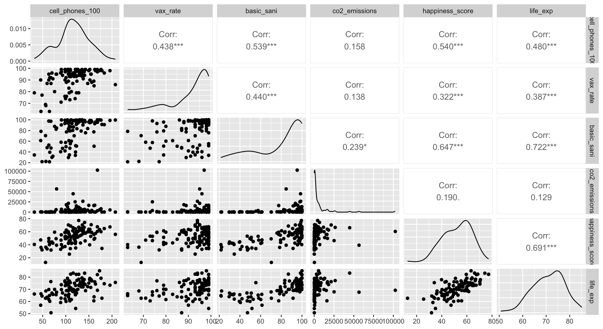
Step 4: Assess scale for continuous variables: Smoothed scatterplots
Take a look at happiness score, vaccination rate, and basic sanitation
HS = ggplot(data = gapm2, aes(y = life_exp, x = happiness_score)) +
geom_point() +
geom_smooth(se=F) + labs(x = "Happiness Score", y = "Life Expectancy (yrs)")
VR = ggplot(data = gapm2, aes(y = life_exp, x = vax_rate)) +
geom_point() +
geom_smooth(se=F) + labs(x = "Vaccination rate (%)", y = "Life Expectancy (yrs)")
BS = ggplot(data = gapm2, aes(y = life_exp, x = basic_sani)) +
geom_point() +
geom_smooth(se=F) + labs(x = "Basic sanitation (%)", y = "Life Expectancy (yrs)")
grid.arrange(HS, VR, BS, nrow=1)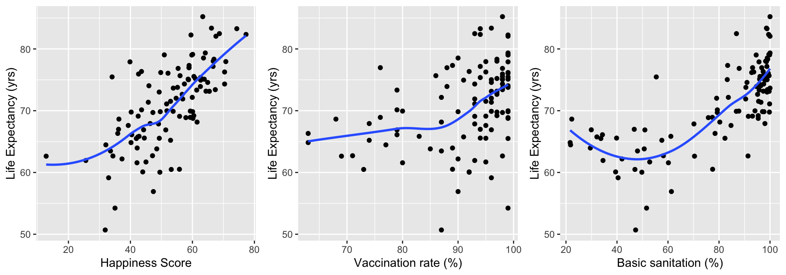
- Happiness score looks pretty linear, vaccination rate looks admissible
- Basic sanitation looks non-linear
Step 4: Assess scale for continuous variables
Three methods/approaches to address the violation of linearity assumption:
- Approach 1: Categorize continuous variable
- Approach 2: Transformation of variable
- Approach 3: Spline functions
Step 4: Approach 1: Categorize continuous variable
Categorize continuous variables
Percentiles, quartiles, quantiles
- Create indicator variables corresponding to each quartile
Meaningful thresholds
- Example: income level groups discussed by Gapminder
Disadvantages:
Takes some time to create new variables, especially with multiple continuous covariates
Start with quartiles, but might be more appropriate to use different splits
- No set rules on this
Advantage: graphical and visually helps
Step 4: Approach 1: Categorize continuous variable
For income, I would use Gapminder’s income level groups
- Discussed in Lesson 10 Categorical Covariates (slide 43)
Experts in the field have developed these income groups
- I think this is best solution for income (that was not meeting linearity as a continuous variable)
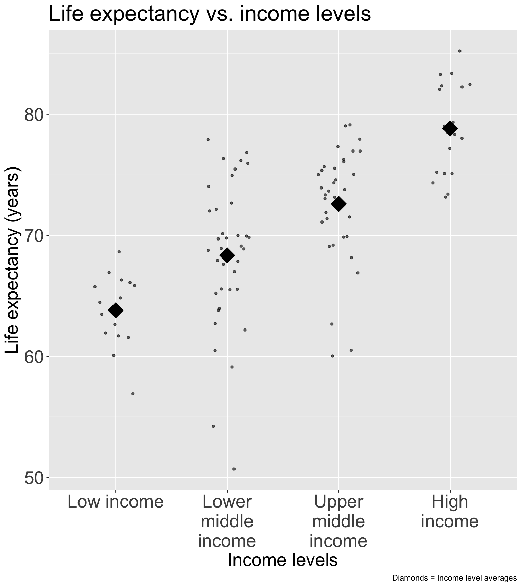
Step 4: Approach 1: Categorize continuous variable
Let’s still try it out with basic sanitation
I have plotted the quartile lines of basic sanitation with red lines
Take a look at the quartiles within the scatterplot
vline_coordinates= data.frame(Quantile_Name=names(quantile(gapm2$basic_sani)),
quantile_values=as.numeric(quantile(gapm2$basic_sani)))
ggplot(data = gapm2, aes(y = life_exp, x = basic_sani)) +
geom_point(size = 3) +
#geom_smooth(se=F) +
labs(x = "Basic sanitation (%)", y = "Life Expectancy (yrs)") +
geom_vline(data = vline_coordinates, aes(xintercept = quantile_values),
color = "red", linetype = "dashed", size = 2) +
theme(axis.title = element_text(size = 25),
axis.text = element_text(size = 25),
title = element_text(size = 25))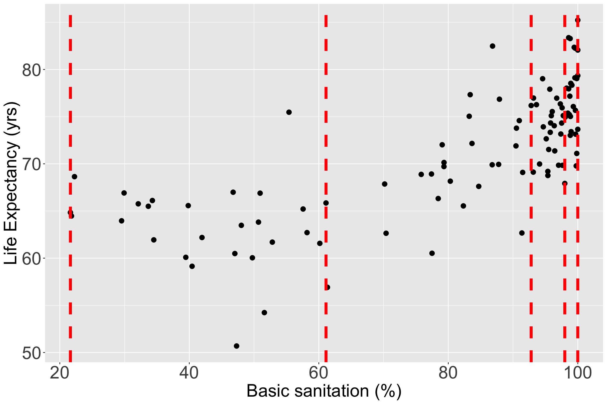
Step 4: Approach 1: Categorize continuous variable
- Let’s make the quartiles for basic sanitation:
Take a look at the quartile means within the scatterplot
ggplot(data = gapm2, aes(y = life_exp, x = BS_q)) +
# geom_point(size = 3, aes(y = life_exp, x = co2_emissions)) +
stat_summary(fun = mean, geom = "point", size = 8, shape = 18) +
labs(x = "Basic sanitation (%)", y = "Life Expectancy (yrs)") +
theme(axis.title = element_text(size = 25),
axis.text = element_text(size = 25),
title = element_text(size = 25))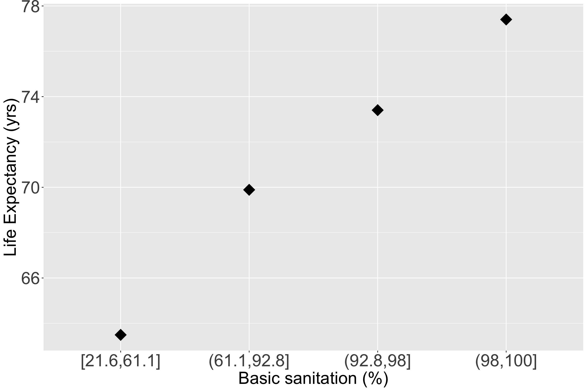
Step 4: Approach 1: Categorize continuous variable
- Let’s fit a new model with new representation for basic sanitation
- Remember, this is the main effects model if we decide to make basic sanitation into quartiles
| Characteristic | Beta | 95% CI | p-value |
|---|---|---|---|
| Cell phones per 100 people | 0.01 | -0.02, 0.04 | 0.7 |
| Basic sanitation (%) | |||
| [21.6,61.1] | — | — | |
| (61.1,92.8] | 4.5 | 2.0, 7.0 | <0.001 |
| (92.8,98] | 7.0 | 4.2, 9.8 | <0.001 |
| (98,100] | 9.0 | 5.8, 12 | <0.001 |
| Freedom status | |||
| NF | — | — | |
| PF | 1.2 | -0.72, 3.2 | 0.2 |
| F | -0.35 | -2.9, 2.2 | 0.8 |
| Income level | |||
| Low income | — | — | |
| Lower middle income | -0.25 | -3.4, 2.9 | 0.9 |
| Upper middle income | -0.11 | -4.2, 4.0 | >0.9 |
| High income | 3.5 | -1.8, 8.8 | 0.2 |
| Vaccination rate (%) | 0.03 | -0.08, 0.14 | 0.6 |
| Happiness score | 0.14 | 0.03, 0.25 | 0.014 |
| Abbreviation: CI = Confidence Interval | |||
Step 4: Approach 2: Transformation of variable
Main concepts and transformations presented in Lesson 7 SLR: Model Evaluation and Diagnostics (slide 33 on)
Idea: test many transformations of a continuous covariate
Recall Tukey’s transformation (power) ladder
- And can use
R’sgladder()to see the transformations
- And can use
| Power p | -3 | -2 | -1 | -1/2 | 0 | 1/2 | 1 | 2 | 3 |
|---|---|---|---|---|---|---|---|---|---|
| \(\frac{1}{x^3}\) | \(\frac{1}{x^2}\) | \(\frac{1}{x}\) | \(\frac{1}{\sqrt{x}}\) | \(\log(x)\) | \(\sqrt{x}\) | \(x\) | \(x^2\) | \(x^3\) |
We can run through each and test different models, or use the approach from Lesson 7
There is also a package we can use!
- mfp package in R contains the fp() function
Step 4: Approach 2: Transformation of variable
| df.initial | select | alpha | df.final | power1 | power2 | |
|---|---|---|---|---|---|---|
| basic_sani | 4 | 1 | 0.05 | 4 | 0 | 0.5 |
| income_level_4Lower middle income | 1 | 1 | 0.05 | 1 | 1 | . |
| income_level_4Upper middle income | 1 | 1 | 0.05 | 1 | 1 | . |
| income_level_4High income | 1 | 1 | 0.05 | 1 | 1 | . |
| happiness_score | 1 | 1 | 0.05 | 1 | 1 | . |
| freedom_statusPF | 1 | 1 | 0.05 | 1 | 1 | . |
| freedom_statusF | 1 | 1 | 0.05 | 1 | 1 | . |
| vax_rate | 1 | 1 | 0.05 | 1 | 1 | . |
| cell_phones_100 | 1 | 1 | 0.05 | 1 | 1 | . |
Step 4: Approach 2: Transformation of variable
| df.initial | select | alpha | df.final | power1 | power2 | |
|---|---|---|---|---|---|---|
| basic_sani | 4 | 1 | 0.05 | 4 | 0 | 0.5 |
| income_level_4Lower middle income | 1 | 1 | 0.05 | 1 | 1 | . |
| income_level_4Upper middle income | 1 | 1 | 0.05 | 1 | 1 | . |
| income_level_4High income | 1 | 1 | 0.05 | 1 | 1 | . |
| happiness_score | 1 | 1 | 0.05 | 1 | 1 | . |
| freedom_statusPF | 1 | 1 | 0.05 | 1 | 1 | . |
| freedom_statusF | 1 | 1 | 0.05 | 1 | 1 | . |
| vax_rate | 1 | 1 | 0.05 | 1 | 1 | . |
| cell_phones_100 | 1 | 1 | 0.05 | 1 | 1 | . |
- Conclusion from fractional polynomial is that basic sanitation needs to be transformed
- Use square root transformation for basic sanitation
fp()does NOT test for linearity assumption, just tells you best fit- Sometimes, it will conclude that something does NOT need to be transformed
- A little counter-intuitive from what we saw in plots
Step 4: Approach 3: Spline functions
- Spline function is to fit a series of smooth curves that joined at specific points (called knots)
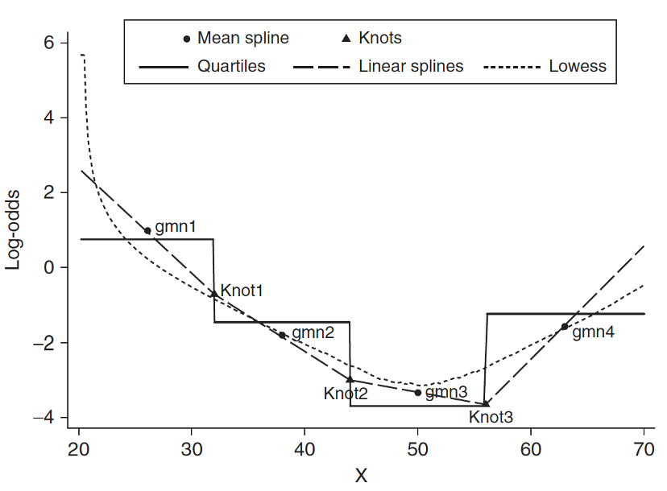
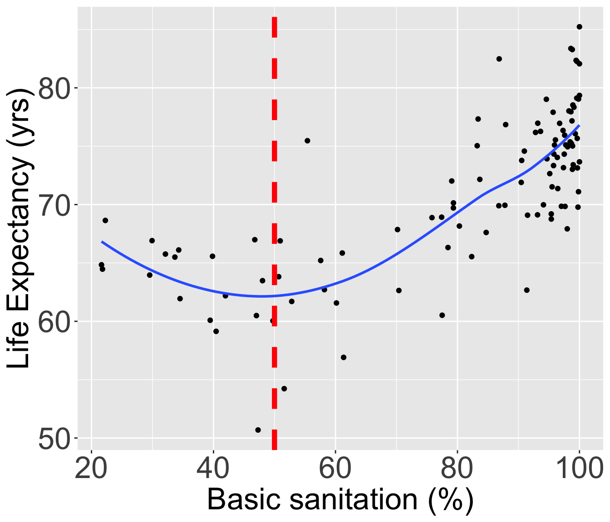
Step 4: Approach 3: Spline functions
Need to specify knots for spline functions
- More knots are flexible, but requires more parameters to estimate
- In most applications three to five knots are sufficient
- Within our class, fractional polynomials will be sufficient (more in Longitudinal Data Analysis)
If you think this is cool, I highly suggest you look into Functional Data Analysis (FDA) or Functional Regression
- Jeffrey Morris is a big name in that field
In R there are a few options to incorporate splines
pspline( ): More informationsmoothHR(): More information
Step 4 Conclusion: main effects model
We concluded that we will use:
- Income levels (categorical) that Gapminder created
- Quartiles for basic sanitation
Note
This is also a good step to decide if you would like to score a categorical variable (Lesson 5)
- Question: Do you see any visual issues with my regression table?
| Characteristic | Beta | 95% CI | p-value |
|---|---|---|---|
| Cell phones per 100 people | 0.01 | -0.02, 0.04 | 0.7 |
| Basic sanitation (%) | |||
| [21.6,61.1] | — | — | |
| (61.1,92.8] | 4.5 | 2.0, 7.0 | <0.001 |
| (92.8,98] | 7.0 | 4.2, 9.8 | <0.001 |
| (98,100] | 9.0 | 5.8, 12 | <0.001 |
| Freedom status | |||
| NF | — | — | |
| PF | 1.2 | -0.72, 3.2 | 0.2 |
| F | -0.35 | -2.9, 2.2 | 0.8 |
| Income level | |||
| Low income | — | — | |
| Lower middle income | -0.25 | -3.4, 2.9 | 0.9 |
| Upper middle income | -0.11 | -4.2, 4.0 | >0.9 |
| High income | 3.5 | -1.8, 8.8 | 0.2 |
| Vaccination rate (%) | 0.03 | -0.08, 0.14 | 0.6 |
| Happiness score | 0.14 | 0.03, 0.25 | 0.014 |
| Abbreviation: CI = Confidence Interval | |||
Learning Objectives
- Understand the overall steps for purposeful selection as a model building strategy
- Apply purposeful selection to a dataset using R
- Use different approaches to assess the linear scale of continuous variables in linear regression
Step 5: Check for interactions
- Create a list of interaction terms from variables in the “main effects model” that has clinical plausibility
Add the interaction variables, one at a time, to the main effects model, and assess the significance using a F-test
- May keep interaction terms with p-value < 0.10 (or 0.05)
- Keep the main effects untouched, only simplify the interaction terms
- Use methods from Step 2 (comparing model with no interactions to a larger model with 1 interaction) to determine which interactions to keep
- The model by the end of Step 5 is called the preliminary final model
Step 5: Check for interactions
We test with \(\alpha = 0.10\)
Follow the F-test procedure in Lesson 10 (MLR: Using the F-test)
- This means we need to follow the 7 steps of the general F-test in previous slide (taken from Lesson 10)
Use the hypothesis tests for the specific variable combo:
Binary & continuous variable (Lesson 11, LOB 2)
Testing a single coefficient for the interaction term using F-test comparing full model to reduced model
Multi-level & continuous variables (Lesson 11, LOB 3)
Testing group of coefficients for the interaction terms using F-test comparing full to reduced model
Binary & multi-level variable (Lesson 12, LOB 4)
Testing group of coefficients for the interaction terms using F-test comparing full to reduced model
Two continuous variables (Lesson 12, LOB 5)
Testing a single coefficient for the interaction term using F-test comparing full to reduced model
Poll Everywhere Questions 5-7
Poll Everywhere Questions 5-7
Poll Everywhere Questions 5-7
Step 5: Check for interactions
- Use
add1()function to compare a full model (interactions with CP) and reduced model (main effects model)
Single term additions
Model:
life_exp ~ cell_phones_100 + BS_q + freedom_status + income_level_4 +
vax_rate + happiness_score
Df Sum of Sq RSS AIC F value Pr(>F)
<none> 1513.0 304.13
cell_phones_100:BS_q 3 23.295 1489.7 308.50 0.4691 0.7046
cell_phones_100:freedom_status 2 69.314 1443.7 303.21 2.1845 0.1184
cell_phones_100:income_level_4 3 82.787 1430.2 304.22 1.7365 0.1652
cell_phones_100:vax_rate 1 41.315 1471.7 303.22 2.5827 0.1115
cell_phones_100:happiness_score 1 0.949 1512.1 306.06 0.0577 0.8106No significant interactions with cell phones per 100 people (p-value > 0.1), so we would not include any interactions with that variable
Think about it: does that track with what we saw in our interactions lecture?
Step 5: Example test in add1() for income_level_4
Null \(H_0\)
\(\beta_8= \beta_9 = \beta_{10}=0\)
Alternative \(H_1\)
\(\beta_{10}\neq0\) and/or \(\beta_{11}\neq0\) and/or \(\beta_{12}\neq0\)
Null / Smaller / Reduced model
\[\begin{aligned} LE = & \beta_0 + \beta_1 \text{CP} + \beta_2 I(\text{FS} = \text{PF}) + \\ & \beta_3 I(\text{FS} = \text{F}) + \beta_4 \text{BS} + \beta_5 \text{VR} + \\ & \beta_6 \text{HS} + \beta_7 I(\text{IL} = \text{lower middle}) + \\ & \beta_8 I(\text{IL} = \text{upper middle}) + \\ & \beta_{9} I(\text{IL} = \text{upper}) + \epsilon \end{aligned}\]
Alternative / Larger / Full model
\[\begin{aligned} LE = & \beta_0 + \beta_1 \text{CP} + \beta_2 I(\text{FS} = \text{PF}) + \beta_3 I(\text{FS} = \text{F}) + \\ & \beta_4 \text{BS} + \beta_5 \text{VR} + \beta_6 \text{HS} + \beta_7 I(\text{IL} = \text{lower middle}) + \\ & \beta_8 I(\text{IL} = \text{upper middle}) + \beta_{9} I(\text{IL} = \text{upper}) + \\ & \beta_{10} \text{CP} \cdot I(\text{IL} = \text{lower middle}) + \\ & \beta_{11} \text{CP} \cdot I(\text{IL} = \text{upper middle}) + \\ & \beta_{12} \text{CP} \cdot I(\text{IL} = \text{upper}) + \epsilon \end{aligned}\]
- From the output of
add1(), we can see that the p-value for droppingincome_level_4is 0.165, which is > 0.1, so we do not reject the null, aka no interaction
Step 6: Assess model fit
- Assess the adequacy of the model (diagnostics) and check its fit
Methods for diagnostics will be discussed next class
Combination of diagnostics and model fit statistics!
Looked at model fit statistics in last lesson
Look at diagnostics in Lesson 15: MLR Diagnostics
- If the model is adequate and fits well, then it is the Final model
Step 6: Assess model fit
Our final model contains
- Cell phones per 100 people
- Basic sanitation (quartiles)
- Freedom status
- Income level
- Vaccination rate
- Happiness score
Step 6: Assess model fit: Model fit statistics
- Way I did it in the lab instructions (and last class)
| Model | Adjusted_R_sq | AIC | BIC |
|---|---|---|---|
| Final model | 0.644 | 604.108 | 638.609 |
- Another (maybe faster?) way to do it (
glance()inbroompackage)
Step 6: Assess model fit: Comparing model fits
Remember the preliminary main effects model (at end of Step 3): same as final model but basic sanitation was not categorized
We can compare model fit statistics of the preliminary main effects model and the final model
fm_glance = glance(final_model) %>% mutate(Model = "Final model") %>%
select(Model, `Adj R-squared` = adj.r.squared, AIC, BIC)
pmem_glance = glance(prelim_me_model) %>%
mutate(Model = "Preliminary main effects model") %>%
select(Model, `Adj R-squared` = adj.r.squared, AIC, BIC)
rbind(fm_glance, pmem_glance) %>% gt() %>%
tab_options(table.font.size = 35) %>% fmt_number(decimals = 3)| Model | Adj R-squared | AIC | BIC |
|---|---|---|---|
| Final model | 0.644 | 604.108 | 638.609 |
| Preliminary main effects model | 0.627 | 608.269 | 640.116 |
Remember, adjusted \(R^2\), AIC, and BIC penalize models for more coefficients
Final model has better model fit statistics (higher adjusted \(R^2\), lower AIC and BIC)
Lesson 14: Purposeful Selection